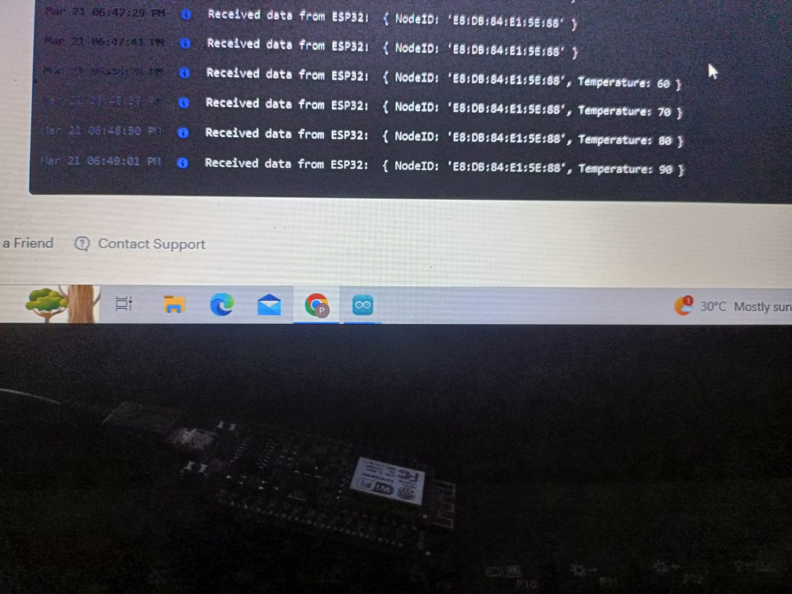
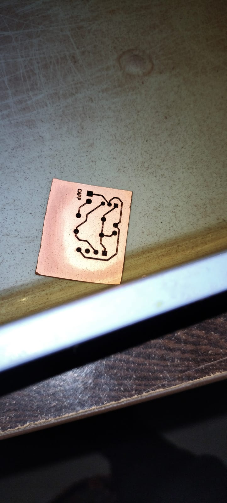

The objectives and purpose this project is to detect the above 1000 degree celcius temperature from k-type Sensor using ESP8266 push the data to render using http,This project is used for analysing the temperature and control the heat based on data .
This project was a part of Anmaya Technology internship in the IOT Department under the gudiance of Senior Researcher Hari Prasad Udupi.
I particularly worked on the developing the user interface for the circuit connections as well as coding .
The objectives and purpose of this project was to develop a cost efficient self made temparature sensor coupling module.which was 70% efficient when compared to the other standard coupling circuit in the market
My role in this project was to generate the hardware layout for the circuit with minimum utilization of area.